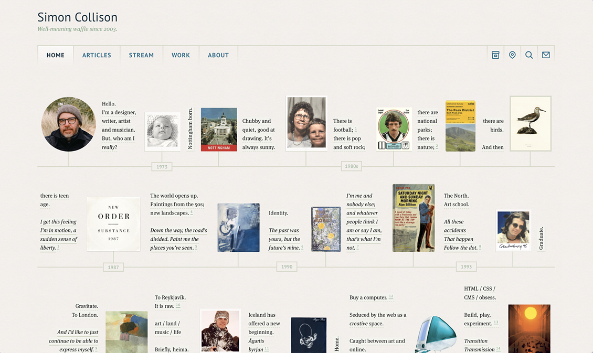
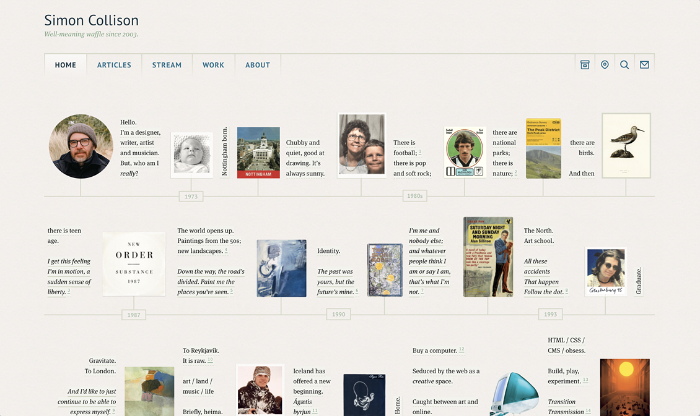

The Sites I Want To Make
And you should hire me to make them.
I used to have an Are.na board with the same name as this site, that I could come back to whenever I felt like designing something new. Because I like making websites, okay?
The list kept growing, and I also had rough sketches and Figma mocks that I wanted to add to it. It became something that deserved it's own site—so that I could show clients the kind of creations that are possible on the web. Possibilites beget possibilites, all ideas are inspiration, etc. etc.
My hope is that you find something here that you want, or something that helps you express what you want.
Because the most important thing about a personal site is it's ability to complement the owner, and their goals. And their dreams. And their limitations and desires. This is the one true goal of design, and especially when it's something as personal as your website.
If you have writing that you're not sure how to present, I help with that. A site should be built around it's owner's content, not the other way around.
If you have things you don't know how to write about, I will try to make you a site that accounts for that. The 1500-word blog post is only one of dozens of different formats that are possible on the web.
The super-minimal personal sites
a site that has one paragraph per page
It's always fun to see the word "minimal" in a client's description of their desired aesthetic.
Making a really good site with as few elements as possible is equal parts unexpectedly difficult and incredibly rewarding. When you get it right, things just fit together so well.
But picking the right building blocks requires time and thoughtfulness. Every element matters that much more now.
Really good minimalism always includes at least a couple elements that are novel enough to delight visitors. If all you have is an unstyled bunch of text, you're doing something wrong. motherfuckingwebsite should be read as strong opinion, not gospel.
A few rough heurestics I use for these kinds of sites:
• Layout follows content
• Find the font first
• The right theme color needs to be searched for
• Do at least one new thing
The gimmicks & shticks
a site where you write each post by hand
a website that looks like ship's log book
One of the best sites I've ever designed was a complete gimmick, I stole the aesthetic from Whole Earth Catalogue. Because that happened to be an example of design that Shreeda really liked. It really is that simple sometimes.
Except...it isn't. For gimmicks to work, you have to pull them off really well, respecting the constraints and affordances of the browser.
A particularly annoying design detail is the fact that you can't rely on fixed viewport sizes, and have to accept that your elements are going to move around more than you would like them to. You have to play translator, going from the fixed layouts that you're trying to emulate to the fluid medium of the screen.
But not all gimmicks are aesthetic ones. You can also play around with arbitrary constraints, and other weird rules.
This is more than just fun, it's often useful than you'd expect. You know what constraints breed.
Someone who has never written an essay in their lives could write a 500 word post, as long as the post was in the form of multiple tweets.
Someone who hasn't updated their site in years can finally allow themsleves to do so if you tell them their site now has a "screenshot dump" section.
You just need to find the gimmick that works for you, and commit to the bit.
The raw concepts and abstract ideas
epistolatory
a site that is a collection of letters.
a single page that contains every single thing about your life on the internet
a website that is a map
a text-based rpg game
a website made up solely of 500 word posts, their titles make up the home page
I don't know what these will look like yet. I don't know who they would be for either. If it's for you, I'm going to need your help to figure out how to take them from vague idea to actual site. These all exist as the bare minimum concept descriptions of what could be.
Most of these ideas are abstract because bringing them to a screen will be a tougher challenge than usual. If it were easy, I would have actual mock-ups by now. I need to know what a dynamic map of a website/person look slike before I can begin fitting it to a browser window.
Nearly all of these will be ruined by the homogenizing effect that mobile screens have on all sites, but that's okay. We pay the price for convenience. Because around 60% of visitors will see your site on a phone screen.
Oh also, if you have ideas that might make for a cool site, let me know so I can steal them and add them here.
Sites I admire

 


All the really good sites come from people who have something to say.
You could make something that's just nice to look at, but that alone wouldn't invite me to poke around and explore. You need to have stuff on there that's worth reading/watching/clicking.
And there's so much stuff that you can have on there.
A website cannot flourish on colors and layout alone.
Another interesting thing about almost all the sites in the above showcase is that they're not that complicated. There's no fancy animations or gradients. Just good color choices and sublime typography.
There's no hyper-specific filter or color scheme for images, and any media that is present is used very tastefully. The core of the web is text.
Finally, most of these have been around for a long, long time, especially if you're counting in internet time. I guess once you find the right site for you, all you have to do is build on top of it, and keep it online.